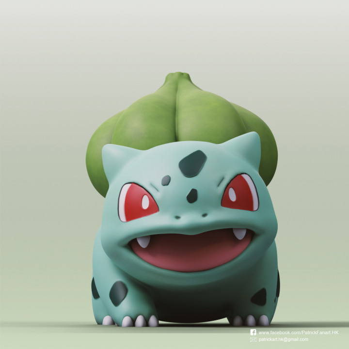
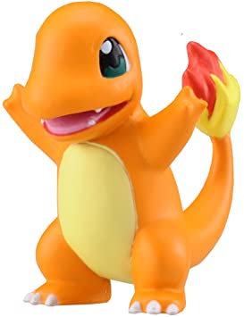
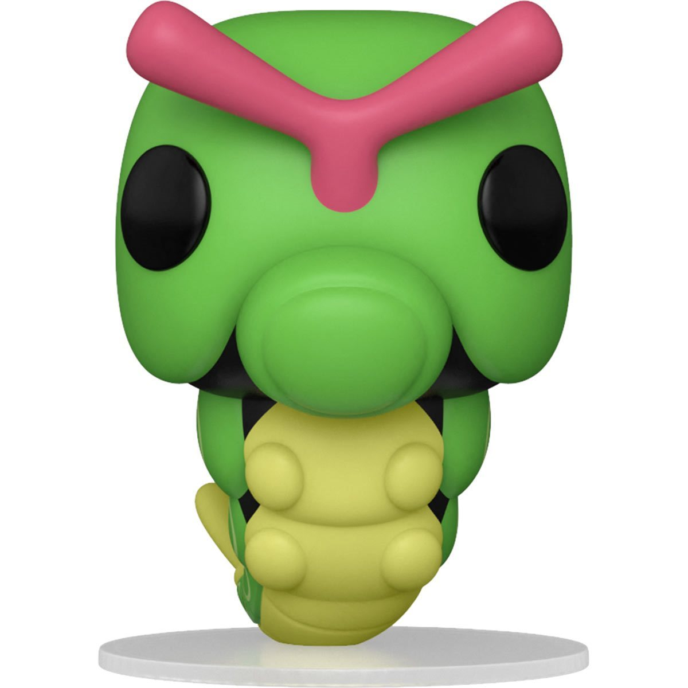

Bulbasaur

Este Pokémon nace con una semilla en el lomo, que brota con el paso del tiempo
Bulbasaur
Charmander

Prefiere las cosas calientes. Dicen que cuando llueve le sale vapor de la punta de la cola.
Charmander
Caterpie

Para protegerse, despide un hedor horrible por las antenas con el que repele a sus enemigos.
Caterpie